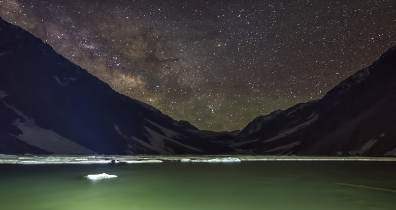

Kundol-Lake
Kundol Lake also known as Kundol Dand, is a lake in Swat Valley, Khyber Pakhtunkhwa, Pakistan, which is located in the north of Utror valley at a distance of 19 km away from kalam. Similarly, there is a well known story about the lake which is that every night in a month, a golden bowl appears in the center of the lake and glistens like moon but no one has ever touched that bowl due to magical powers inside it.
